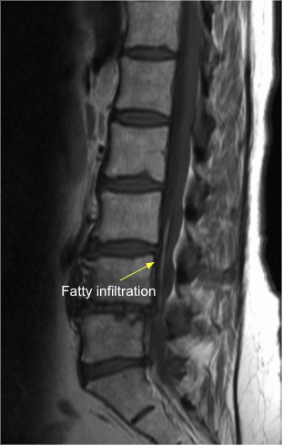

Adapted from: Kecler-Pietrzyk A, Lipoma of filum terminale. Case study, Radiopaedia.org (Accessed on 03 Jan 2026) https://doi.org/10.53347/rID-53131
1) Description of Measurement
The filum terminale is a thin fibrous structure extending from the conus medullaris to the coccyx, anchoring the spinal cord. Abnormal thickening of the filum terminale is a key imaging feature of tethered cord syndrome (TCS) and may cause progressive neurologic deterioration due to traction on the spinal cord.
2) Instructions to Measure
3) Normal vs. Pathologic Ranges
4) Important References
Yamada S, Won DJ, Siddiqi J, Yamada SM. Tethered cord syndrome: overview of diagnosis and treatment. Neurol Res. 2004 Oct;26(7):719-21. doi: 10.1179/016164104225017947.
Hertzler DA 2nd, DePowell JJ, Stevenson CB, Mangano FT. Tethered cord syndrome: a review of the literature from embryology to adult presentation. Neurosurg Focus. 2010 Jul;29(1):E1. doi: 10.3171/2010.3.FOCUS1079.
Grimme JD, Castillo M. Congenital anomalies of the spine. Neuroimaging Clin N Am. 2007 Feb;17(1):1-16. doi: 10.1016/j.nic.2006.11.002.
5) Other info....
Filum thickness should always be interpreted alongside:
A thickened filum with a low-lying conus is highly diagnostic of tethered cord syndrome.